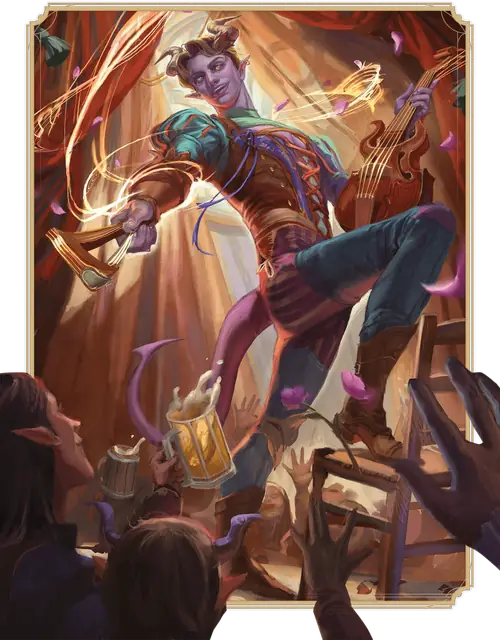

Бард
Bard

Основная характеристика Харизма
Кость хитов К8 за уровень Барда
Хиты за уровень 1к8 (или 5) + ваш модификатор Телосложения (суммарно минимум 1)
Владение спасбросками Ловкость и Харизма
Владение навыками Выберите три любых навыка
Владение оружием Простое оружие
Владение инструментами Выберите три Музыкальных инструмента
Тренированность с доспехами Лёгкие доспехи
Начальное снаряжение Выберите А или Б:
(А) Кожаный доспех, 2 Кинжала, Музыкальный инструмент на ваш выбор, Набор артиста и 19 ЗМ;
или (Б) 90 ЗМ
| Уровень | Бонус владения | Классовые умения | Кость вдохновения | Заговоры | Подготовленные заклинания | Ячейки заклинаний на уровень заклинаний: 1 | Ячейки заклинаний на уровень заклинаний: 2 | Ячейки заклинаний на уровень заклинаний: 3 | Ячейки заклинаний на уровень заклинаний: 4 | Ячейки заклинаний на уровень заклинаний: 5 | Ячейки заклинаний на уровень заклинаний: 6 | Ячейки заклинаний на уровень заклинаний: 7 | Ячейки заклинаний на уровень заклинаний: 8 | Ячейки заклинаний на уровень заклинаний: 9 |
|---|---|---|---|---|---|---|---|---|---|---|---|---|---|---|
| 1 | +2 | Бардовское вдохновение, Сотворение заклинаний | К6 | 2 | 4 | 2 | - | - | - | - | - | - | - | - |
| 2 | +2 | Мастер на все руки, Экспертность | К6 | 2 | 5 | 3 | - | - | - | - | - | - | - | - |
| 3 | +2 | Подкласс Барда | К6 | 2 | 6 | 4 | 2 | - | - | - | - | - | - | - |
| 4 | +2 | Увеличение характеристик | К6 | 3 | 7 | 4 | 3 | - | - | - | - | - | - | - |
| 5 | +3 | Источник вдохновения | К8 | 3 | 9 | 4 | 3 | 2 | - | - | - | - | - | - |
| 6 | +3 | Умение подкласса | К8 | 3 | 10 | 4 | 3 | 3 | - | - | - | - | - | - |
| 7 | +3 | Контрочарование | К8 | 3 | 11 | 4 | 3 | 3 | 1 | - | - | - | - | - |
| 8 | +3 | Увеличение характеристик | К8 | 3 | 12 | 4 | 3 | 3 | 2 | - | - | - | - | - |
| 9 | +4 | Экспертность | К8 | 3 | 14 | 4 | 3 | 3 | 3 | 1 | - | - | - | - |
| 10 | +4 | Тайны магии | К10 | 4 | 15 | 4 | 3 | 3 | 3 | 2 | - | - | - | - |
| 11 | +4 | — | К10 | 4 | 16 | 4 | 3 | 3 | 3 | 2 | 1 | - | - | - |
| 12 | +4 | Увеличение характеристик | К10 | 4 | 16 | 4 | 3 | 3 | 3 | 2 | 1 | - | - | - |
| 13 | +5 | — | К10 | 4 | 17 | 4 | 3 | 3 | 3 | 2 | 1 | 1 | - | - |
| 14 | +5 | Умение подкласса | К10 | 4 | 17 | 4 | 3 | 3 | 3 | 2 | 1 | 1 | - | - |
| 15 | +5 | — | К12 | 4 | 18 | 4 | 3 | 3 | 3 | 2 | 1 | 1 | 1 | - |
| 16 | +5 | Увеличение характеристик | К12 | 4 | 18 | 4 | 3 | 3 | 3 | 2 | 1 | 1 | 1 | - |
| 17 | +6 | — | К12 | 4 | 19 | 4 | 3 | 3 | 3 | 2 | 1 | 1 | 1 | 1 |
| 18 | +6 | Превосходное вдохновение | К12 | 4 | 20 | 4 | 3 | 3 | 3 | 3 | 1 | 1 | 1 | 1 |
| 19 | +6 | Эпический дар | К12 | 4 | 21 | 4 | 3 | 3 | 3 | 3 | 2 | 1 | 1 | 1 |
| 20 | +6 | Слова Творения | К12 | 4 | 22 | 4 | 3 | 3 | 3 | 3 | 2 | 2 | 1 | 1 |
как персонаж 1-го уровня
Получите все атрибуты из таблицы «Ключевые атрибуты Барда».
Получите умения Барда 1-го уровня; они перечислены в таблице «Умения Барда».
как мультиклассовый персонаж
Получите следующие атрибуты из таблицы «Ключевые атрибуты Барда»: Кость Хитов, владение одним навыком на ваш выбор, владение одним Музыкальным инструментом на ваш выбор и тренированность с Лёгкими доспехами.
Получите умения Барда 1-го уровня; они перечислены в таблице «Умения Барда». Ознакомьтесь с правилами мультиклассирования, чтобы определить доступные вам ячейки заклинаний.
Уровень 1: Бардовское вдохновение
Вы можете сверхъестественным образом вдохновлять других словами, музыкой или танцем. Это вдохновение представляется вашей Костью бардовского вдохновения — это кость к6.
Использование Бардовского вдохновения. Бонусным действием вы можете вдохновить другое существо в пределах 60 футов от вас, которое может вас видеть или слышать. Это существо получает одну из ваших Костей бардовского вдохновения. У существа не может быть больше одной Кости бардовского вдохновения единовременно.
Если в течение следующего часа это существо провалит Тест к20, оно единожды может бросить Кость бардовского вдохновения и добавить выпавший результат к к20, что может изменить провал на успех. Кость бардовского вдохновения тратится при броске.
Количество использований. Вы можете даровать Кость бардовского вдохновения количество раз, равное вашему модификатору Харизмы (минимум один раз). Вы восстанавливаете все потраченные использования, когда завершаете Долгий отдых.
На больших уровнях. Ваша Кость бардовского вдохновения меняется, когда вы достигаете определенных уровней Барда, как показано в столбце «Кость вдохновения» в таблице «Умения Барда»: кость становится к8 на 5-м уровне, к10 на 10-м уровне и к12 на 15-м уровне.
Уровень 1: Сотворение заклинаний
Вы научились сотворять заклинания своим бардовским искусством. Правила сотворения заклинаний смотрите в соответствующем разделе. Следующая информация описывает, как вы используете эти правила с заклинаниями Барда.
Заговоры. Вы знаете два заговора на ваш выбор из списка заклинаний Барда. Рекомендуются Злая насмешка и Пляшущие огоньки. Каждый раз, когда вы получаете уровень Барда, вы можете заменить один из ваших заговоров другим заговором из списка заклинаний Барда на ваш выбор.
Когда вы достигаете 4-го и 10-го уровней Барда, вы изучаете ещё по одному заговору из списка заклинаний Барда на ваш выбор, как показано в столбце «Заговоры» таблицы «Умения Барда».
Ячейки заклинаний. В таблице «Умения Барда» указано, сколько у вас есть ячеек заклинаний для сотворения заклинаний 1-го уровня и выше. Вы восстанавливаете все потраченные ячейки, когда завершаете Долгий отдых.
Подготовленные заклинания 1-го уровня и выше. Вы подготавливаете список заклинаний 1-го уровня и выше, которые вы можете сотворять с помощью этого умения. Для начала выберите четыре заклинания 1-го уровня из списка заклинаний Барда. Рекомендуются Диссонирующий шепот, Лечащее слово, Очарование личности и Сверкающие брызги.
Количество заклинаний в вашем списке увеличивается по мере получения уровней Барда, как указано в столбце «Подготовленные заклинания» таблицы «Умения Барда». Когда это число увеличивается, выбирайте дополнительные заклинания Барда до тех пор, пока их количество не сравняется с числом, указанным в таблице. Каждое выбираемое заклинание может быть только такого уровня, для которого у вас есть ячейка заклинаний. Например, если вы Бард 3-го уровня, ваш список подготовленных заклинаний может включать шесть заклинаний 1-го или 2-го уровня в любой комбинации.
Если другое умение Барда даёт вам заклинания, которые у вас всегда подготовлены, то эти заклинания не учитываются в общем списке подготавливаемых вами с помощью этого умения заклинаний; в остальных отношениях для вас они считаются заклинаниями Барда.
Замена подготовленных заклинаний. Каждый раз, когда вы получаете уровень Барда, вы можете заменить одно заклинание в вашем списке другим заклинанием Барда, для которого у вас есть ячейка заклинаний.
Заклинательная характеристика. Заклинательной характеристикой для ваших заклинаний Барда является Харизма.
Заклинательная фокусировка. Вы можете использовать Музыкальный инструмент в качестве Заклинательной фокусировки для ваших заклинаний Барда.
Уровень 2: Мастер на все руки
Вы можете добавить половину вашего Бонуса владения (округляя вниз) к любой проверке характеристики, которая использует навык, которым вы не владеете, если ваш Бонус владения не используется в этой проверке иным образом.
Например, если вы совершаете проверку Силы (Атлетика), и у вас нет владения Атлетикой, вы можете добавить к этой проверке половину вашего Бонуса владения.
Уровень 2: Экспертность
Вы получаете Экспертность в двух из тех навыков, которыми вы владеете, на ваш выбор. Если вы ими владеете, рекомендуются Выступление и Убеждение.
Уровень 3: Подкласс Барда
Вы получаете подкласс Барда на ваш выбор. Подкласс — это специализация, которая даёт вам умения на определённых уровнях Барда. Вы всегда получаете все умения подкласса, уровень которых не больше вашего уровня Барда.
Уровень 4: Увеличение характеристик
Вы получаете черту Увеличение характеристик или другую черту на ваш выбор, требованиям которой вы соответствуете.
Уровень 5: Источник вдохновения
Теперь вы восстанавливаете все ваши потраченные Кости бардовского вдохновения, когда завершаете Короткий или Долгий отдых.
Кроме того, вы можете потратить одну ячейку заклинаний, чтобы восстановить одно потраченное использование Бардовского вдохновения (действий не требуется).
Уровень 6: Умение подкласса
Вы получаете все умения подкласса Барда 6-го уровня.
Уровень 7: Контрочарование
Вы можете использовать ноты музыки или слова силы, чтобы разрушить воздействие на сознание. Если вы или другое существо в пределах 30 футов от вас проваливаете спасбросок против эффекта, который накладывает состояние Очарованный или Испуганный, вы можете Реакцией вызвать переброс спасброска; этот переброс совершается с Преимуществом.
Уровень 8: Увеличение характеристик
Вы получаете черту Увеличение характеристик или другую черту на ваш выбор, требованиям которой вы соответствуете.
Уровень 9: Экспертность
Вы получаете Экспертность ещё в двух из тех навыков, которыми вы владеете, на ваш выбор.
Уровень 10: Тайны магии
Вы узнали секреты широкого спектра магических дисциплин. Каждый раз, когда вы получаете уровень Барда (включая этот уровень) и количество подготавливаемых заклинаний согласно таблице «Умения Барда» увеличивается, вы можете выбирать ваши новые подготовленные заклинания из списков заклинаний Барда, Волшебника, Друида или Жреца; выбранные заклинания будут считаться для вас заклинаниями Барда.
Кроме того, каждый раз, когда вы заменяете подготовленное для этого класса заклинание, вы можете заменить его заклинанием из этих списков.
Уровень 12: Увеличение характеристик
Вы получаете черту Увеличение характеристик или другую черту на ваш выбор, требованиям которой вы соответствуете.
Уровень 14: Умение подкласса
Вы получаете все умения подкласса Барда 14-го уровня.
Уровень 16: Увеличение характеристик
Вы получаете черту Увеличение характеристик или другую черту на ваш выбор, требованиям которой вы соответствуете.
Уровень 18: Превосходное вдохновение
Когда вы совершаете бросок Инициативы, и у вас меньше двух использований Бардовского вдохновения, вы восстанавливаете потраченные использования, пока у вас не станет два использования.
Уровень 19: Эпический дар
Вы получаете черту из категории Эпических даров или другую черту по вашему выбору, требованиям которой вы соответствуете. Рекомендуется Дар восстановления заклинаний.
Уровень 20: Слова Творения
Вы овладели двумя Словами Творения, словом жизни и словом смерти. У вас всегда подготовлены заклинания Слово силы: исцеление и Слово силы: смерть. Когда вы сотворяете любое из этих заклинаний, вы можете нацелиться сразу на два существа, если вторая цель находится в пределах 10 футов от первой.
Подклассы
Коллегия доблести
Воспевайте подвиги древних героев
Барды Коллегии доблести — смелые рассказчики, чьи истории сохраняют через года память о могущественных героях прошлого. Эти барды воспевают деяния великих в сводчатых залах или перед толпами, собравшимися вокруг огромных костров. Они путешествуют, чтобы своими глазами увидеть грандиозные события и сделать так, чтобы память о них жила. Своими песнями они вдохновляют новые поколения достигать тех же высот, что и герои прошлых лет.
Уровень 3: Боевое вдохновение
Ваше вдохновение может переломить ход битвы. Существо, получившее от вас Кость бардовского вдохновения, может использовать её для получения одного из следующих эффектов.
Защита. Когда по существу попадает бросок атаки, это существо может Реакцией бросить Кость бардовского вдохновения и добавить выпавшее значение к своему КЗ против этой атаки, что может привести к промаху атаки.
Нападение. Когда существо попадает по цели броском атаки, оно может бросить Кость бардовского вдохновения и прибавить результат броска к урону, наносимому цели этой атакой.
Уровень 3: Боевая подготовка
Вы получаете владение Воинским оружием и тренированность со Средними доспехами и Щитами.
Кроме того, вы можете использовать Простое или Воинское оружие в качестве Заклинательной фокусировки для сотворения заклинаний из списка заклинаний Барда.
Уровень 6: Дополнительная атака
Когда в ваш ход вы используете действие Атака, вы можете совершить не одну, а две атаки.
Кроме того, вместо одной из этих атак вы можете сотворить один из ваших заговоров со временем сотворения в действие.
Уровень 14: Боевая магия
После того, как вы сотворите заклинание со временем сотворения в действие, вы можете Бонусным действием совершить одну атаку оружием.
Коллегия знаний
Погрузитесь в глубины магических знаний
Барды Коллегии знаний собирают заклинания и тайны откуда только могут — из научных трудов, мистических обрядов и крестьянских сказок. Члены коллегии собираются в библиотеках и университетах, где делятся друг с другом собранными знаниями. Они также встречаются на фестивалях или государственных мероприятиях, где могут разоблачать коррупционеров, изобличать ложь и высмеивать самонадеянных представителей власти.
Уровень 3: Дополнительные навыки
Вы получаете владение тремя навыками по вашему выбору.
Уровень 3: Острое словцо
Вы научились использовать своё остроумие, чтобы сверхъестественным образом отвлекать, сбивать с толку и иным образом подрывать уверенность и способность других существ. Когда видимое вами в пределах 60 футов от вас существо совершает бросок урона, преуспевает в проверке характеристик или попадает броском атаки, вы можете Реакцией потратить одно использование вашего Бардовского вдохновения; бросьте Кость бардовского вдохновения и вычтите выпавшее число из броска существа, уменьшая урон или потенциально изменяя успех на провал.
Уровень 6: Магические открытия
Вы изучаете два заклинания по вашему выбору. Эти заклинания могут быть из списков заклинаний Волшебника, Друида или Жреца в любой их комбинации. Выбираемое вами заклинание должно быть заговором или заклинанием, для которого у вас есть ячейки заклинаний, как показано в таблице «Умения Барда».
У вас всегда подготовлены выбранные заклинания, и каждый раз, когда вы получаете уровень Барда, вы можете заменить одно из этих заклинаний другим, соответствующим этим требованиям.
Уровень 14: Непревзойдённый навык
Когда вы проваливаете проверку характеристики или промахиваетесь броском атаки, вы можете потратить одно использование Бардовского вдохновения; бросьте Кость бардовского вдохновения и добавьте выпавшее число к к20, что может изменить провал на успех. При провале Бардовское вдохновение не тратится.
Коллегия очарования
Сплетайте чарующую магию фей
Коллегия очарования берет свое начало в чарующей магии Страны Фей. Изучающие эту магию Барды вплетают в свои песни и истории нити красоты и ужаса, а самые могущественные из них могут облечь себя потусторонним величием. Их выступления вызывают тоску по утраченной невинности, пробуждают неосознанные воспоминания о давних страхах и возбуждают эмоции даже у самых жестокосердных слушателей.
Уровень 3: Чарующая магия
У вас всегда подготовлены заклинания Очарование личности и Отражения.
Кроме того, сразу после того, как вы сотворите заклинание школы Очарования или Иллюзии с ячейкой заклинаний, вы можете заставить видимое вами в пределах 60 футов от вас существо совершить спасбросок Мудрости против вашей Сл спасброска заклинаний. При провале вы накладываете на цель состояние Очарованный или Испуганный (на ваш выбор) на 1 минуту. Она может повторять этот спасбросок в конце каждого своего хода, при успехе заканчивая на себе этот эффект.
Как только вы использовали это умение, вы не можете сделать это вновь, пока не завершите Долгий отдых. Вы также можете восстановить использование этого умения, потратив одно использование Бардовского вдохновения (действий не требуется).
Уровень 3: Ореол вдохновения
Вы можете вплести волшебную силу в песню или танец, наполняя других энергией. Бонусным действием вы можете потратить использование Бардовского вдохновения и бросить Кость бардовского вдохновения. При этом выберите других существ в пределах 60 футов от вас, количеством не больше, чем ваш модификатор Харизмы (минимум одно существо). Каждое из этих существ получает Временные хиты в количестве, равном удвоенному результату броска Кости бардовского вдохновения; после этого каждое из них может Реакцией переместиться на расстояние вплоть до своей Скорости, не вызывая Провоцированных атак.
Уровень 6: Ореол величия
У вас всегда подготовлено заклинание Приказ. Бонусным действием вы можете сотворить Приказ без траты ячейки заклинаний; при этом вы принимаете сверхъестественный облик на 1 минуту или пока не закончится ваша Концентрация. В течение этого времени вы можете Бонусным действием сотворять Приказ без траты ячейки заклинаний.
Любое Очарованное вами существо автоматически проваливает спасбросок против Приказа, сотворённого вами с этим умением.
Как только вы использовали это умение, не можете сделать это вновь, пока не завершите Долгий отдых. Вы также можете восстановить его использование, потратив ячейку заклинаний 3-го уровня или выше (действий не требуется).
Уровень 14: Несокрушимое величие
Бонусным действием вы можете принять волшебно величественный облик на 1 минуту или пока не получите состояние Недееспособный. Пока этот облик действует, каждый раз, когда существо попадает по вам броском атаки, оно должно преуспеть в спасброске Харизмы против вашей Сл спасброска заклинаний. При провале существо ужасается вашему величию, и вместо попадания атака промахивается.
Как только вы примете этот облик, вы не сможете сделать это снова, пока не завершите Короткий или Долгий отдых.
Коллегия танца
Двигайтесь в гармонии с Космосом
Барды Коллегии танца знают, что Слова Творения не могут содержаться в речи или песне; эти слова исходят из перемещений небесных тел и проистекают из движений мельчайших существ. Практика гармонии с бурлящим космосом этих Бардов — это проворство, скорость, грация.
Уровень 3: Ослепительные фуэте
Пока вы не носите ни доспехов, ни Щита, вы получаете следующие преимущества.
Виртуоз танца. Вы совершаете с Преимуществом все проверки Харизмы (Выступление), если они включают в себя ваш танец.
Защита без доспехов. Ваш базовый Класс Защиты равен 10 + ваши модификаторы Ловкости и Харизмы.
Ловкие выпады. Когда вы тратите использование вашего Бардовского вдохновения частью действия, Бонусного действия или Реакции, вы можете совершить один Безоружный удар частью того же действия, Бонусного действия или Реакции.
Бардовский урон. При совершении бросков атаки и урона ваших Безоружных ударов вы можете использовать Ловкость вместо Силы. Когда вы наносите урон Безоружным ударом, вы можете вместо обычного урона Безоружного удара нанести Дробящий урон, равный броску вашей Кости бардовского вдохновения + ваш модификатор Ловкости. При этом броске кость не тратится.
Уровень 6: Вдохновляющие движения
Когда враг, которого вы видите, заканчивает свой ход в пределах 5 футов от вас, вы можете Реакцией потратить одно использование вашего Бардовского вдохновения, чтобы переместиться на расстояние вплоть до половины вашей Скорости. После этого один из ваших союзников в пределах 30 футов от вас на ваш выбор также может Реакцией переместиться на расстояние вплоть до половины своей Скорости.
Ни одно из этих перемещений не вызывает Провоцированных атак.
Уровень 6: Совместный танец
Когда вы совершаете бросок Инициативы, вы можете потратить одно использование вашего Бардовского вдохновения, если у вас нет состояния Недееспособный. При этом бросьте вашу Кость бардовского вдохновения; вы и все слышащие или видящие вас союзники в пределах 30 футов от вас получаете бонус к Инициативе, равный результату броска.
Уровень 14: Ведущее уклонение
Если вы попадаете под действие эффекта, который позволяет вам совершить спасбросок Ловкости, чтобы получить только половину урона, вместо этого вы не получаете вовсе никакого урона, если спасбросок был успешен, и получаете только половину урона, если он был провален. Если какие-либо существа совершают этот же спасбросок Ловкости в пределах 5 футов от вас, вы можете распространить это преимущество на их спасброски.
Вы не можете использовать это умение, если у вас есть состояние Недееспособный.
Коллегия луны
Вдохновляйте союзников первобытными историями
Истоки Коллегии луны восходят к древним кругам друидов островов Муншэй; они доверили первым Бардам этой традиции вести историю островов и их народов. Фейская магия островов и первобытная сила лунных колодцев используется Бардами этой коллегии для укрепления сил союзников, защиты мира природы и вдохновления бардовского ремесла.
Уровень 3: Вдохновение луны
Первобытная, вечноменяющаяся сила луны течёт в ваших жилах, даруя следующие преимущества:
Вдохновенное затмение. Когда вы Бонусным действием даёте существу Кость бардовского вдохновения, частью этого же действия вы можете получить состояние Невидимый и телепортироваться на расстояние вплоть до 30 футов в видимое вами незанятое пространство. Эта невидимость длится до начала вашего следующего хода и оканчивается немедленно после того, как вы сотворите заклинание, нанесёте урон или совершите бросок атаки.
Лунная живучесть. Когда вы заклинанием восстанавливаете Хиты существу, вы можете потратить одну Кость бардовского вдохновения и увеличить количество восстанавливаемых Хитов на результат броска этой кости. Кроме того, Скорость этого существа повышается на 10 футов до конца его следующего хода. Вы можете применить эту особенность только один раз в ход.
Уровень 3: Древние знания
Вы узнаёте Друидический язык и один заговор Друида. Для вас этот заговор считается заклинанием Барда, но не учитывается в числе известных вам заговоров. Каждый раз, когда вы получаете уровень Барда, вы можете заменить этот заговор другим заговором Друида на ваш выбор.
Кроме того, вы получаете владение одним из следующих навыков на ваш выбор: Восприятие, Выживание, Медицина, Обращение с животными, Природа, Проницательность.
Уровень 6: Благословение лунного света
У вас всегда подготовлено заклинание Лунный луч.
Когда вы сотворяете Лунный луч, можете изменить это заклинание так, что пока оно действует, вы мерцаете слабым светом, источая Тусклый свет в радиусе 5 футов, и каждый раз, когда существо проваливает спасбросок против такого Лунного луча, другое существо на ваш выбор из видимых вами в пределах 60 футов от вас восстанавливает 2к4 Хитов.
Как только вы измените Лунный луч таким образом, вы не можете сделать это снова, пока не завершите Долгий отдых.
Уровень 14: Вечернее великолепие
Мощь луны наполняет вас, усиливая ваше Вдохновение луны следующим образом:
Тень новолуния. Когда вы используете Вдохновенное затмение, существо, которому вы даёте Кость бардовского вдохновения, также может получить состояние Невидимый и своей Реакцией телепортироваться на расстояние вплоть до 30 футов в видимое им незанятое пространство. Это существо остаётся Невидимым до начала его следующего хода.
Резонанс полнолуния. Когда вы используете Лунную живучесть, можете не тратить Кость бардовского вдохновения, а бросить 1к6 и использовать результат вместо Кости бардовского вдохновения.
Коллегия духов
Взывайте к духам за завесой могилы
Барды Коллегии духов изменяют мир, призывая духов из древних легенд. Духи эти, однако, своенравны, и Бард не всегда призывает то, что хочет.
Уровень 3: Проводник
Вы узнаёте, как связываться с замогильными духами, и как пропускать через себя их силы и знания. Вы получаете следующие преимущества.
Направляющий шёпот. Вы узнаёте заговор Наставление. Когда вы сотворяете Наставление, его дистанция равна 60 футам.
Спиритическая фокусировка. Вы используете инструменты, помогающие вам связываться с духами. Вы получаете Игровой набор (игральные карты) и владение таким Игровым набором. Вы можете использовать такой набор в качестве Заклинательной фокусировки для ваших заклинаний Барда; вместо него вы можете также использовать Магическую фокусировку (кристалл или сфера), Свечу или Писчее перо.
Уровень 3: Замогильные духи
Вы обращаетесь к духам мёртвых, чтобы усиливать себя и союзников. Когда Бонусным действием вы даёте существу Кость бардовского вдохновения, вы можете воззвать к силам случайного духа. Чтобы определить, какого духа вы призываете, бросьте Кость бардовского вдохновения и сверьте результат с таблицей «Замогильные духи». Дух остаётся призван, пока вы не выпустите его или пока не завершите Короткий или Долгий отдых.
Управляемый призыв. Бонусным действием вы можете потратить использование вашего Бардовского вдохновения и призвать конкретного духа: в таком случае выберите духа из таблицы «Замогильные духи» не с помощью броска кости, а самостоятельно. Номер, соответствующий выбранному духу, должен быть не больше, чем максимальное значение вашей Кости бардовского вдохновения; например, если Кость бардовского вдохновения — к8, то вы можете выбрать любого духа вплоть до Тени (номер 8).
Выпустить духа. Действием Магия вы можете выпустить одного из призванных вами духов. Выберите целью одно видимое вами в пределах 30 футов существо; на эту цель применяется эффект этого духа. Если эффект требует спасброска, его Сложность равна вашей Сл спасброска заклинаний Барда.
Замогильные духи
| Кость бардовского вдохновения | Дух и эффект |
| 1 | Возлюбленный. Цель восстанавливает Хиты в количестве, равном броску вашей Кости бардовского вдохновения плюс ваш модификатор Харизмы. |
| 2 | Стрелок. Цель получает Силовой урон, равный броску вашей Кости бардовского вдохновения плюс ваш модификатор Харизмы. |
| 3 | Мститель. До конца вашего следующего хода каждое существо, попадающее по цели броском рукопашной атаки, получает Силовой урон, равный броску вашей Кости бардовского вдохновения. |
| 4 | Отступник. Цель немедленно может Реакцией телепортироваться в видимое ей незанятое пространство в пределах 30 футов. |
| 5 | Предсказатель. Цель совершает с Преимуществом все Тесты к20 до начала вашего следующего хода. |
| 6 | Странник. Цель получает Временные хиты в количестве, равном броску вашей Кости бардовского вдохновения плюс ваш уровень Барда. Пока на цели сохраняются эти Временные хиты, её Скорость увеличена на 10 футов. |
| 7 | Проказник. Цель совершает спасбросок Мудрости. При провале цель получает Психический урон, равный двум броскам вашей Кости бардовского вдохновения, и состояние Очарованный до начала вашего следующего хода. При успехе цель только получает половину этого урона. |
| 8 | Тень. Цель получает состояние Невидимый до конца её следующего хода или до тех пор, пока цель не совершит бросок атаки, нанесёт урон или сотворит заклинание. Когда эта невидимость заканчивается, каждое существо в исходящей от цели Эманации радиусом 5 футов должно совершить спасбросок Телосложения, при провале получая Некротический урон, равный двум броскам вашей Кости бардовского вдохновения. |
| 9 | Поджигатель. Цель совершает спасбросок Ловкости, при провале получая урон Огнём, равный четырём броскам вашей Кости бардовского вдохновения, а при успехе только половину этого урона. |
| 10 | Трус. Цель, а также каждое существо по вашему выбору из находящихся в пределах исходящей от цели Эманации радиусом 30 футов, должна преуспеть в спасброске Мудрости, иначе получит состояние Испуганный до начала вашего следующего хода. Скорость Испуганного таким образом существа уменьшается вдвое (округляя в меньшую сторону), и в свой ход оно может совершить или действие, или Бонусное действие, но не то и другое. |
| 11 | Силач. Каждое существо по вашему выбору из находящихся в пределах исходящей от цели Эманации радиусом 30 футов должно совершить спасбросок Силы. При провале существо получает урон Звуком, равный трём броскам вашей Кости бардовского вдохновения, и состояние Опрокинутый. При успехе существо только получает половину этого урона. |
| 12 | Жрец. Цель восстанавливает Хиты в количестве, равном двум броскам вашей Кости бардовского вдохновения, и одно из следующий состояний по вашему выбору оканчивается на цели: Оглохший, Ослеплённый, Отравленный, Очарованный, Ошеломлённый или Парализованный. |
Уровень 6: Улучшенный призыв
Ваши способности призывать духов растут. Вы получаете следующие преимущества.
Силы с того света. Один раз в ход, когда вы сотворяете с ячейкой заклинаний заклинание Барда, наносящее урон или восстанавливающее Хиты, бросьте 1к6. Вы добавляете выпавшее число к одному из бросков урона заклинания или к суммарному количеству восстанавливаемых заклинанием Хитов.
Проявление духов. У вас всегда подготовлено заклинание Духовные стражи. Вы можете сотворить его единожды без траты ячейки заклинаний, и вы должны завершить Долгий отдых, прежде чем сможете сделать это снова.
Каждый раз, когда вы сотворяете Духовных стражей, вы можете изменить заклинание так, чтобы стражи защищали от мирских опасностей. Если вы делаете это, вы и ваши союзники в Эманации стражей обладает Укрытием наполовину. Как только вы изменяете заклинание таким образом, вы не можете сделать это снова, пока не завершите Короткий или Долгий отдых.
Уровень 14: Мистическая связь
Вы научились особенно искусно призывать духов. Каждый раз, когда вы совершаете бросок по таблице «Замогильные духи», вы можете совершить бросок дважды и выбрать, какой дух будет призван. Если результаты обоих бросков одинаковы, вы можете выбрать любого духа из таблицы.
Описание
Барды создают магию своей музыкой, танцами и стихами, они искусны в том, чтобы вдохновлять других, смягчать боль, обескураживать врагов и создавать иллюзии. Барды верят, что мультивселенная была создана Словом, и что отзвуки этих Слов Творения всё ещё звенят и мерцают на каждом плане бытия. Магия бардов использует эти слова, что вне любых языков.
Всё, что угодно, может вдохновить на создание новой песни или сказки — и потому почти что угодно очаровывает Барда. Барды осваивают многие вещи, включая шутки, магию, исполнение музыки.
Жизнь Барда проходит в путешествиях, историях, сборе знаний — и за счёт благодарных зрителей, как и у любого артиста. Но Бардов от прочих отличают глубина их знаний и мастерство владения магией.